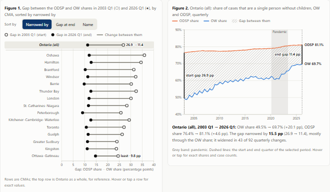

Q2 · candidate variants v1 (2026-11-13) — for the group to compare and choose. Design rationale: Q2_DESIGN.md · References: REFERENCES.md
Part 2 of 3 · Family composition · OW and ODSP, 15 CMAs
Q2: three candidate designs, no chart type repeated
All three answer both parts of the same question for the same audience — How have the shares of cases involving a single person without children changed over time in OW and ODSP across CMAs, and where has the gap between the two programs narrowed the most? — with the same data, colours, story steps and page skeleton as Parts 1 and 3. Every number on every candidate is computed from the course CSVs in the browser.

A · Ranked dumbbell + linked lines
Start and end gap for every CMA on one scale, sorted by narrowing; click a row for its two share lines with the gap hatched between them.
Motivation
"Where" is a ranking task; a common-scale dumbbell answers it, and the linked lines answer "when, and which program".
Appeal
Every end dot sits left of its start dot; a sorted list ready for a briefing.
Cost
Familiar, little novelty; no geography; the dual lines repeat Part 1's chart type.
Course basis
L3 position on a common scale, sort, popout · L4-1 proximity, connectedness · L5 sort, selection, linked views · L6 martini glass, annotation.
C · Tile grid map + waterfall not the agreed baseline
Equal tiles in rough map positions, each with yearly columns from the OW share up to the ODSP share; a waterfall splits the selected CMA's change by period.
Motivation
Analysts look for regions to investigate; equal tiles keep geography without area bias and carry the full record.
Appeal
Ontario as sixteen panels of shrinking columns; Guelph's single upward step during the pandemic.
Cost
Less precision per panel; approximate positions; a second map on the site; the most work.
Course basis
L7 equal-area tile grid instead of a choropleth · L3 shared-scale small multiples · L5 spatial arrangement · L6 contrast.
Chart type = mark + spatial layout. Shared components (story steps, period selector, read-outs, Table 1, take-away cards, tooltips) are not charts. Details in Q2_DESIGN.md §7.
Version
Figure
Chart type
Marks
Channels
Answers
Same type in Part 1 or 3?
A
1
Ranked dumbbell
Two dots (hollow, filled) + rule
x = gap; y = CMA sorted by narrowing; fill = start / end
Where (and start / end levels)
Close to Part 3's ranked dot plot with ranges (kept: agreed baseline)
A
2
Dual lines with a hatched gap band
2 lines + textured area
x = time; y = share; hue = program; band width = gap
How shares changed
Yes: Part 1 A's dual lines (kept: agreed baseline)
B
1
Comet (arrow) plot in share space
Tapered comets + start dots; 45° and constant-gap lines
x = OW share; y = ODSP share (equal scales); direction = which program; distance to 45° = gap; time = slider
Both
No; shares the "two measures as axes" idea with Part 1 D, but no time path
B
2
Diverging stacked bars (decomposition)
Two-part bars + net tick
length from zero; hue = program; side of zero = widens / narrows
Where + which program
No
C
1
Tile grid map of floating-column small multiples
Equal tiles + yearly floating columns with end caps
tile position = rough geography; column bottom / top = OW / ODSP share; length = gap; x in tile = year
Both
Both are maps, different marks from Part 3's proportional-symbol map (open question: one site-wide map panel?)
C
2
Waterfall
Floating bars + connectors
vertical position / length; step up = widened, down = narrowed
When it narrowed
No
Side by side
A starting point for the meeting; details and evidence in Q2_DESIGN.md §8 and §10.
Criterion
A · Dumbbell + lines
B · Comets + decomposition
C · Tile map + waterfall
Clarity for a first-time reader
High
Medium (diagonal reference lines)
Medium–high (many small panels, one structure)
Analytical depth
Medium: ranking + one area's full trend
High: both shares, gap, contributions, quarter slider
Medium–high: every area's full trend, geography, phases
Creativity (R10)
Low
High
High
Development effort left
Low
Medium (reader test, overlap)
Medium–high (second map decision, grid sign-off)
Consistency with Parts 1 and 3
High
Medium (new form, same colours and skeleton)
Medium (a second map)
Visual diversity for the site
Low (repeats Part 1 lines)
High
Medium–high
Agreed baseline
Used
Not used (reason on the page)
Not used (reason on the page)
Recommendation (the group decides)
Use B as the main view and add C's waterfall as the "when" view for the selected CMA. B is the only candidate that shows which program moved — the OW share rose in every CMA while the ODSP share changed far less — and its Figure 2 still ranks the CMAs. Its form is new to the site and every novelty has a function (45° = no gap, direction = which program). C's waterfall covers B's weak spot, time, using the same before / during / after periods as Parts 1 and 3.
Condition: a quick reader test of B's comet chart with 2–3 people outside the group. If it fails, fall back to A plus B's decomposition bars. Consider C's tile map only if the group wants one site-wide map panel.
Decisions the group needs to make
Which candidate (or combination) moves to the stable path design/q2/prototype/; this batch is Q2 v1, tagged q2-v1.
Whether the site gets one shared map panel (Part 3 already has a proportional-symbol map; C would add a tile grid map).
Update the research draft: it says "ranked bar chart", the agreed baseline is a dumbbell; it also lists a program filter, which none of the candidates offers.
Default period (2003 Q1 → 2026 Q1) and phase cut points (2019 Q4, 2023 Q1).
C's yearly columns use each year's first quarter rather than an annual mean; B stretches its vertical scale on phones.
Whether to offer a four-quarter moving average for small CMAs, and whether to extract one site-wide stylesheet.